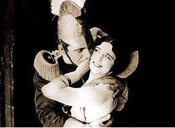
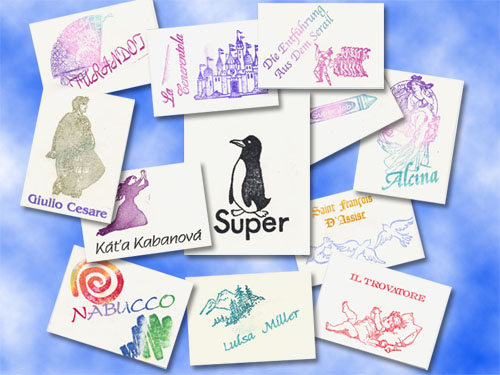
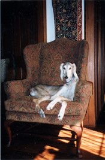

SpearheadNews.com
Super News
2003-2003

Auditions
Events
Rehearsal Schedules
Interviews
Photos
Reviews
More Fun Stuff!
The
Super Handbook
Tips, Tricks, and FAQs
San
Francisco Opera
Links
Classifieds
Contacts
Archives
Members Only
Spearheadnews.com is not officially affiliated with any
performing arts organization.
All photographs remain the property of their copyright holders.
©2003 SpearheadNews
All Rights Reserved
Super Humans by Ulrica PAGE THREE
Shhhhhhhhhhhhhhhhhhhhhhhhhh...

Ulrica sees a curious correlation between Grand Opera and silent movies. No doubt her many years of experience as a Supernumerary have created a bond with the voiceless performers of the Silent Age. So imagine her delight when she received the program for the Eighth Annual Silent Film Festival at the Castro Theatre earlier this month and saw the 1915 Cecil B. De Mille film of Carmen listed, starring handsome morphine addict Wallace Reid and the Metropolitan Opera's Golden Age star, the lovely Geraldine Farrar (above). Ulrica well remembers her own days as a ‘Gerry Flapper' screaming with delight whenever Madame Farrar took the stage, especially in those long neglected verismo roles for which she was so renowned: Zaza, Louise, The Goose Girl, Madame Sans Gene. The list goes on.
So it was definitely a trip down memory lane to hear the Mighty Wurlitzer pounding out selections from Bizet and to see ‘Gerry' dancing ecstatically on the tables, rose clenched firmly between her teeth.
As we all know La Farrar had a tumultuous career in love, including paramours Arturo Toscanini and the Crown Prince of Germany. When the Crown Prince's father politely asked Gerry to leave both his son and his country at once, she did so, taking with her several pieces from the German crown jewels. Ulrica strongly recommends Gerry's autobiography Such Sweet Compulsion written in 1938 and co-authored with the spirit of her already deceased mother. Fascinating reading!
And speaking of the Silent Age, Super Lisa Lorea (unlike your correspondent, much too young to remember that era first hand) comes from a long line of silent movie actors. Her great-uncle, Delos Hammers, was a Keystone Kop (pictured center in the convict's striped hat, below) and her grandmother, silent player Hazel Bailes, appeared in D.W. Griffith's 1916 classic Intolerance, befriending cinema great Lillian Gish on the set. Lisa herself was recently seen moving across the raked SFO stage on her knees while precariously placing votive candles during the finale of The Damnation of Faust.
And who was the wag who renamed that opera 101 Damnations?

Have you ever wondered where our opening night candies and rubber-stamped cards come from? Well, the candies come from choclatier Joseph Schmidt via Charlie Lichtman but the cards are hand-crafted by Super Renee DeJarnatt with a great deal of wit and patience. Renee has been doing them longer than anyone can remember but on behalf of all of us, Ulrica would like to say a big Thank You to Renee for all of her hard work, show after show. Renee was at the Super Call with her delightful granddaughter, would-be Super Dominique and hopes to be back in the House with us soon.

Guess Whom I Runnicled Into
Ulrica drove to the new International Terminal at San Francisco Airport today to meet dear friends arriving from London. She was amazed to see Maestro Donald Runnicles coming through the gate, pushing his own luggage cart! Ever one to lend a hand she rushed towards him, only to see Maestro's familiar shock of gray curls quickly disappearing into the crowd. Uncharitable readers may want to make a connection between Ulrica's presence and Maestro's hasty retreat but one prefers to believe he was just very anxious to return home to his lovely wife, former Super Elizabeth ( Don Carlo 1992) and daughter, Damnation Super Ashley.
Best of Breed
If you thought the mystery lady in the last page of Ulrica was Super Albert Malkin guess again! It was Super Grove Wiley!! Yes Albert has changed his name and has had 400 head shots printed bearing the new moniker and asks that we all use it.

Someone wondered aloud if Susan Anderson should change her beloved dog's name from Wiley to Albert and thus maintain balance in the Universe…
That's "g" not "d"
Ulrica's dear friend Twisted Sister (a.k.a. Laurel Winzler, last seen doing some excellent arm work in the Trovatore convent shower room scene) wondered what the word dramaturg means. After much searching through arcane German/English dictionaries she found the following;
Noun; 1 : one who makes drama turgid 2: theatrical producer favoring trenchcoats and fedoras onstage
Must Be the Air
Was everyone in Santa Fe this summer? Former SFO Stage Manager, the much missed Jerry Sherk, was spotted there with his wife who is expecting baby # 2. Congratulations to them. Jerry is no longer with the Philadelphia Opera but Ulrica speaks for all the Supers when she wishes them lots of luck for the future. Also there (and everywhere else), Fabulous Opera Mom Pat Beresford. Pat, the Henry Kissinger of the Super Set, describes her trips here. And "Flaurel" Winzler reports on La Belle Hélène.
The Czech Is in the Mail
And back from a visit to the Czech Republic is veteran Super Tom Carlisle. Welcome back, Tom: we're looking forward to your reviews of the Prague Opera. Lots of Smetana we hope! There's a fascinating interview here.
Get Well Soon!
And finally Best Wishes to Super John R. (Film) Martin, at home recovering from surgery. Flowers were hand delivered by Laurel and with them all our hopes for a speedy recovery and a prompt return to treading the SFO boards.
MORE Ulrica page 4-->